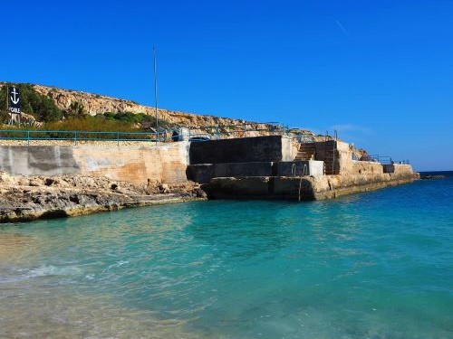
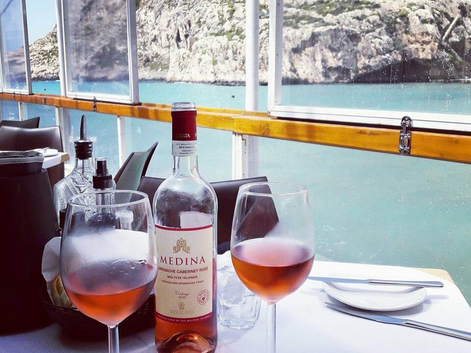
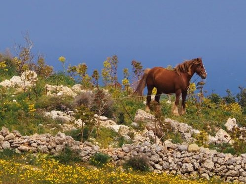
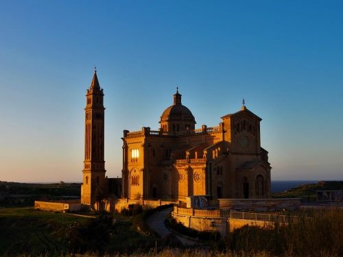

What to do nearby
Gozo's small size makes exploring the whole island incredibly easy, but if you want to stick close to home there is plenty to keep you occupied.
Should you wish to book any tours or activities during your stay at The Hermitage, just let us know. We can help book your tours prior to arrival, or give you information on personally recommend tours, activities and places to eat.
The Coastline

Heading down the coastal tracks is one the best ways to discover Gozo's rugged natural beauty and if the sea is looking tempting then head down to nearby Hondoq Bay or Dahlet Qorrot Beach. Here you can sunbath and swim in the crystal clear waters. Just watch out for the locals diving off the rocks, or join in!
Places to eat and shop

Try some classic Maltese dishes in our local restaurants, depending on what you fancy, we can recommend some of our favourites. Experience the coffee culture in Qala square watching the world go by, or pick up fresh local produce in nearby markets to make the most of your self catering facilities.
Feeling Adventurous?

Want to explore the area on horseback? Gozo riding stables is 50m down the road from The Hermitage. If you fancy diving, let us recommend dive shops. How about trying Quad Biking, or even renting a boat to nearby Comino Island? Kayaks and boats are available at Hondoq Bay. We can organise this once you get here, or prior to arrival.
The Culture

The Maltese islands have a rich history, and you don't have to go very far to discover it. Check out the 14th century chapel on the way to Hondoq, or the 15th century Baroque watch tower just across the valley with views of Sicily. Visiting the Citadella and Basilicas of Victoria, and the Roman salt pans of Zebbug are also worthwhile.